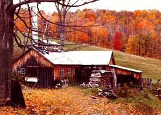
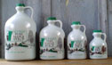

|  IN SOUTH WOODSTOCK, VERMONT |
The Morgan family has been producing delicious
maple syrup for several generations from the majestic sweet maple orchards
here in beautiful South Woodstock in conjunction with a small hill farm
operation. We invite you to try some of our tasty sweetness on your morning
pancakes, waffles, your bowl of vanilla ice cream or countless other
combinations.
All maple syrup from the Morgan Sugarhouse is sealed in plastic containers in accordance with Vermont Law. Vermont maple syrup is all natural; no preservatives or additives. After the seal is broken the remaining syrup should be kept in the refrigerator. Maple syrup, whether opened or unopened, can be kept at its best in a freezer for long periods of time. Maple Syrup will not freeze solid but will become very thick and then return to its former viscosity upon warming. The various grades we have to offer are: Fancy (currently sold out of Fancy Grade), Grade A medium amber, Grade A dark amber, and Grade B. |
Syrup Grades
Fancy syrup (currently sold out) is usually made from the first sap run of the season.
The color is light amber and the maple flavor is mild and delicate.
Medium Amber is slightly darker than Fancy and the maple flavor is more evident.
Dark Amber has a much more robust maple flavor and sweetness that makes it a favorite of many.
Grade B syrup is a dark syrup with a very hearty maple flavor and
is used by many for cooking purposes.
Pricing
(includes shipping) (Return to
top of page)
|  | ||||
| East of the Mississippi | ||||
| West of the Mississippi |
Pricing is for continental US delivery only
We currently ship only in the U.S.
(These prices are your final cost. Shipping has already been included)
Two ways to order:
To print a copy of the order form, click here.
You do not have to be a PayPal member to use your credit card. We use them because they provide a secure transaction website for a nominal fee.
If using PayPal, please note that the following transaction fees will be added to the above pricing:
For each gallon ordered: $1.58
For each 1/2 gallon ordered: 1.05
For each quart ordered: .81
For each pint ordered: .55
If you are not completely satisfied, please return unused portion for full
refund.
Thank You For Your Order
Feel free to email us
any questions you may have and thank you for your patronage.
(Page last reviewed
February 2007)
| PRICING | TO ORDER |
University of Vermont Extension Maple Pages